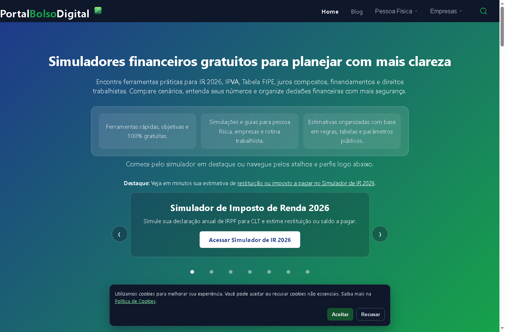
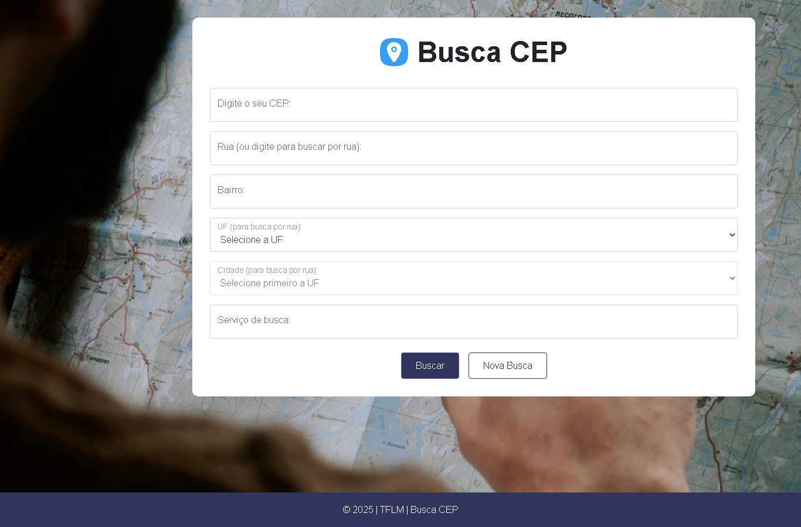
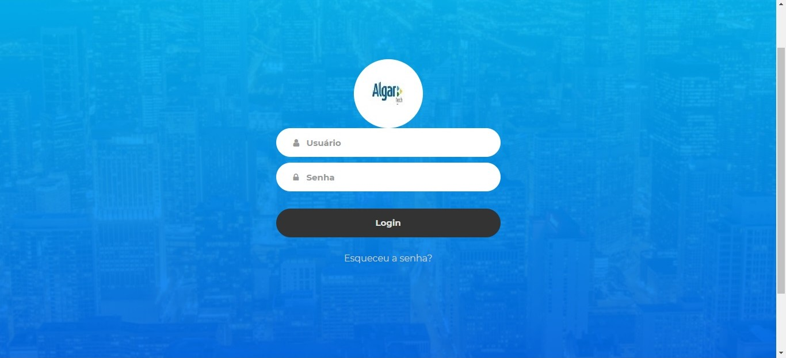
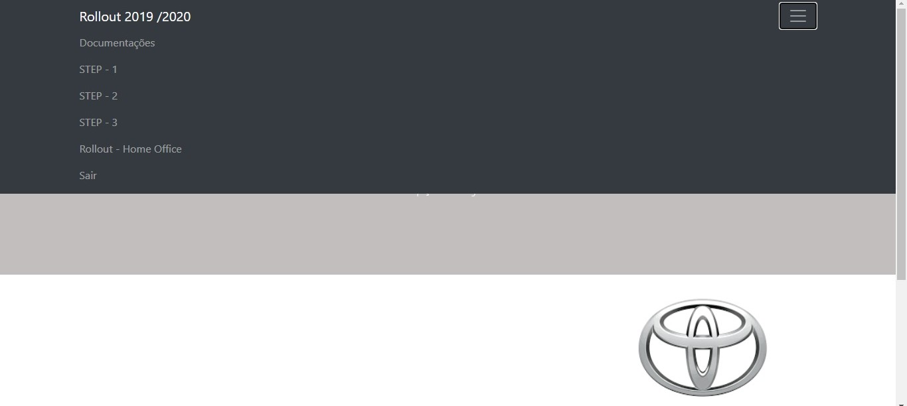
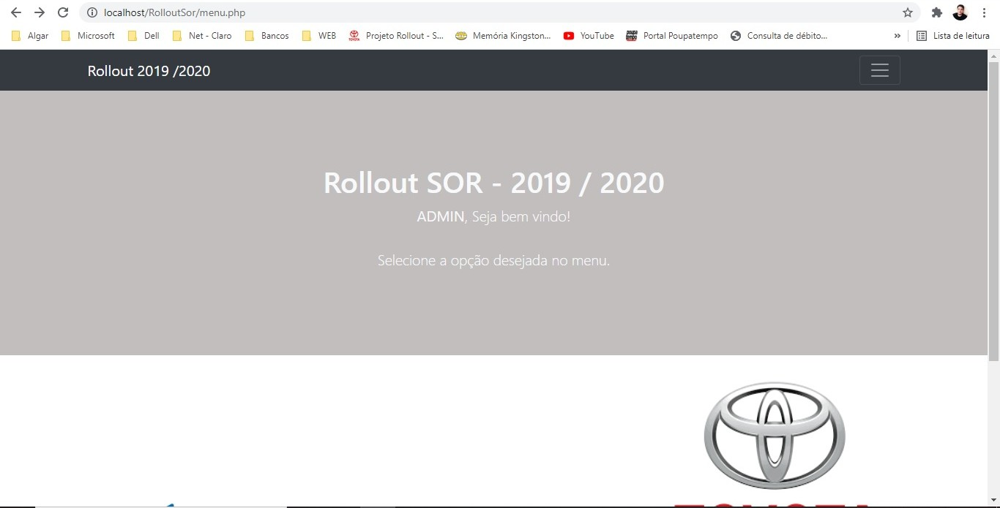
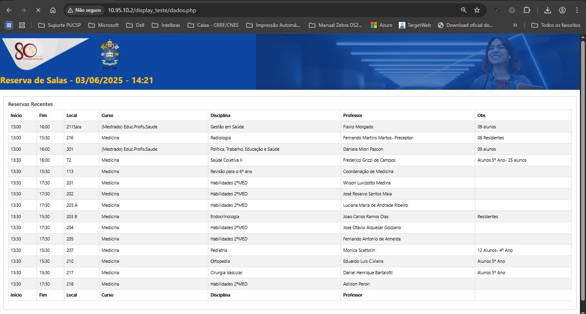

Portfólio
Projetos e melhorias em sistemas que desenvolvi ou participei, com foco em automação, organização de processos, desenvolvimento web, SEO técnico e performance.
Portal Bolso Digital - Plataforma web
Desenvolvimento e manutenção de plataforma web responsiva focada em simuladores financeiros e conteúdo digital.
- Criação de páginas e simuladores financeiros com HTML5, CSS3 e JavaScript.
- Implementação de SEO técnico, estrutura semântica, responsividade e otimização de Core Web Vitals.
- Integração e gerenciamento de Google AdSense, Google Analytics, Google Tag Manager, Google Search Console e Cloudflare.
- Acompanhamento de métricas, monetização digital, retenção de tráfego orgânico e melhoria contínua da plataforma.
Tecnologias e práticas: HTML5, CSS3, JavaScript, SEO técnico, performance web, UX, Google Analytics, Google Tag Manager, Google Search Console, Google AdSense e Cloudflare.

BuscaCEP - Consulta de endereços
Site desenvolvido para consultar endereços a partir de um CEP informado pelo usuário, com preenchimento automático dos dados retornados pela API. O projeto também permite busca por rua, cidade e UF.
- Consulta de endereço por CEP usando BrasilAPI.
- Busca por rua, cidade e UF usando ViaCEP.
- Carregamento de estados e cidades com dados do IBGE.
- Interface responsiva com campos de formulário e botões de busca.
Tecnologias: HTML5, CSS3, JavaScript ES6, Fetch API, BrasilAPI, ViaCEP e API de localidades do IBGE.

Rollout - Sistema para geração de formulários
Projeto desenvolvido durante minha atuação na Algar Tech para automatizar a criação de documentações que antes eram feitas por planilhas.
- Criação de documentos de retirada de computadores.
- Geração de checklists de softwares.
- Organização de documentações do processo de rollout.
Tecnologias: PHP, Bootstrap, JavaScript e MySQL.



Agenda - Atualização de layout
Atualização visual da lista de agendamentos de um sistema utilizado na faculdade onde trabalho atualmente.
Tecnologias: PHP, JavaScript, HTML5 e CSS.
